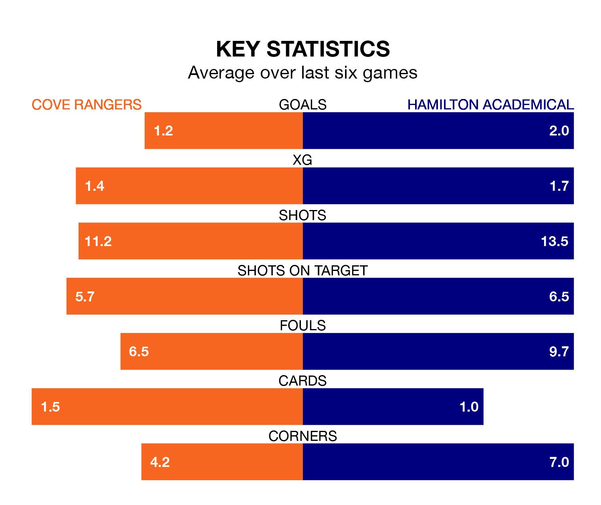

Two of League One's meanest defences go head-to-head at the Balmoral Stadium on Saturday, when Hamilton Academical visit Cove Rangers.
Only one side – Falkirk – has conceded fewer goals than Hamilton Academical to date: the away side have let in just 22 goals in 29 games.
The Wee Rangers have conceded 43 goals in 29 games, giving them the third tightest back line so far this season.
Key to the Accies's home form has been Jamie Smith, who has allowed 0.96 goals past him per 90 minutes, compared to 1.44 for Nicholas Suman in the opposite net.
In Rumarn Burrell, Cove have the league's most on-form striker so far this season. He has notched 19 goals in 29 appearances.
His goal rate of one every 131 minutes is quicker than that of Kevin O'Hara, Hamilton Academical's top scorer with a goal every 188 minutes, and a total of 12 goals in 29 games.
The Accies are second in the table after 29 games, of which they have won 17 and drawn seven, earning 58 points.
Rangers are three places behind the visitors in fifth, with 12 wins and seven draws putting them on 43 points.
In the last 10 years, Cove and Hamilton Academical have played each other on eight occasions. They won two each, and they drew four times.
On average, the Wee Rangers scored 1.5 goals and the Accies 1.5 in those matches.
Their last meeting was on January 13, when Hamilton Academical won 2-0 at home.
The Wee Rangers are in mixed form in League One, with three wins and three losses from their last six games.
With three wins and a draw over that period, Hamilton Academical's form is slightly better – they have taken 10 points from 18, compared to the home team's nine.
Cove's last match was on March 16, a 1-0 win against Kelty Hearts, with Mitchel Megginson getting the goal for the Wee Rangers.
Hamilton Academical beat Stirling Albion 3-0 last time out, also on March 16, with Ahkeem Shavon Rose, Jake Hastie and O'Hara on the scoresheet.
Updated: 10:19 (UTC), 22/03/24